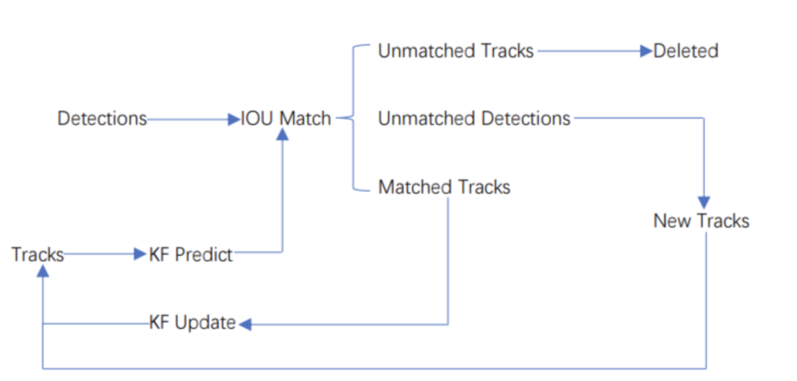
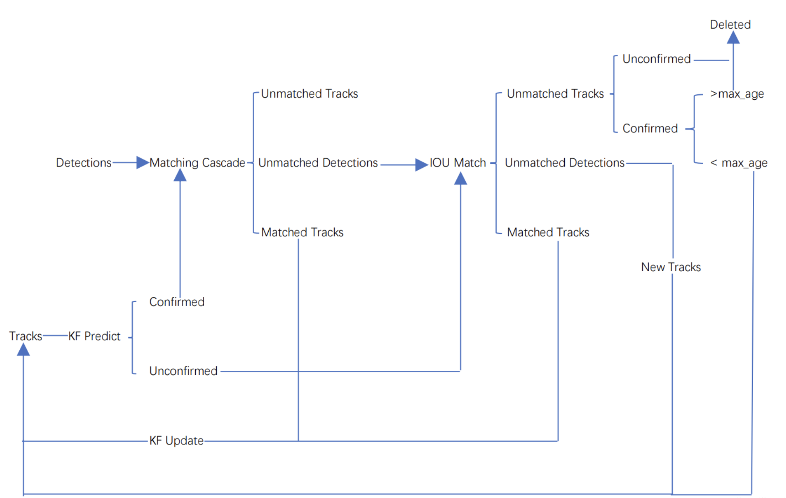

DeepSORT
DeepSORT is the short for Deep learning based SORT. DeepSORT is a target detection algorithm that based on computer vision. It combines deep learning with traditional target detection SORT(Simple Online and Realtime Tracking).
DeepSORT detect the objects in every frame of the video via object detector(YOLO, Faster R-CNN and so on). And use multi-feature fusion to respresent and describe objects. Then use SORT algorithm to follow the objects. Based on SORT, DeepSORT intorduces Re-Identification(Re-ID) model to solve the problem of determining the ID of the detected objects. Re-Id model determine the unique ID of object by calculating the similarity in the subsequent few frame.
The advantage of DeepSORT is that it has high accuracy and is robust. It can also fit the circumstance when the object are shaded or shape changed. DeepSORT has widely been used in the detection and following of people, cars and Intelligent video surveillance。
Traditional SORT
Workflow of SORT
The core of SORT is Kalman Filter and Hungarian algorithm. Kalman Filter predicts objects' next time positions using current position and moving characteristic and Hungarian algorithm match the last time objects with current Kalman filter prediciton to follow all the objects in the image.SORT works like follows: When the algorithm starts, there are no detections and prediction on the image.
- We first ues object detector to detect the objects on the image.
- We construct tracks based on the objects we detected on the first frame.
- Based on the tracks, we use Kalman filter to predict the position of objects on the next frame.
- On the next frame, we use object detector to detect objects and implement IOU match for last frame prediction and current frame detection. And calculate cost matrix based on the result of IOU match result.(Cost Matrix = 1 - IOU)
- We take Cost Matrix as the input of the Hungarian algorithm and we will get linear matching result. Since there are many objects on a frame, we can divide them into 3 groups according to their trait: Unmatched tracks, Unmatched detections, Matched tracks. Unmatched tracks means that there are prediction on the frame but no corresponding detection. Unmatched detections means that there are detection but no corresponding prediction. And matched tracks are the easiest one, it means that we match detection and prediction successfully.
For my own understanding, I think that Unmatched tracks means that the object has moved out of image in the next frame, and unmatched detection means that there are new object appeared in the image. For tracks that are unmatched, we deleted it directly. For unmatched detections, we can create new tracks that represent the new detection. And for the matched tracks, we update it’s position from the detection and add the new position to it’s track.
We repeat the 3,4,5 steps until the input video is over.
DeepSORT
Workflow of DeepSORT
We can see some drawbacks of SORT, for example, if object is shaded, it will lose it's track and it's ID. DeepSORT introduce Matching cascade and New track confirm compared to SORT. Tracks in DeepSORT are grouped into confirmed track and unconfirmed track. New created Tracks are unconfirmed. Unconfirmed track have to match detections centain continuous times(3 by default, we call it min_age) can it be a confirmed track. And confirmed track will tranform to unconfirmed if it unmatch detection over certain continuous times(30 by default, we call it max_age).DeepSORT works like follows: When the algorithm starts, there are no detections and prediction on the image.
- We first ues object detector to detect the objects on the image.
- We construct tracks based on the objects we detected on the first frame. These tracks are unconfirmed.
- Based on the tracks, we use Kalman filter to predict the position of objects on the next frame.
- On the next frame, we use object detector to detect objects and implement IOU match for last frame prediction and current frame detection. And calculate cost matrix based on the result of IOU match result.(Cost Matrix = 1 - IOU)
- We take Cost Matrix as the input of the Hungarian algorithm and we will get linear matching result. And just as SORT, we divide them into 3 groups: Unmatched tracks, unmatched detections and matched tracks. For unmatched tracks, we delete it directly.(This track is unconfirmed, so we can delete it. But if the track is confirmed, we can only delete it if its unmatching time exceed max_age). For unmatched detections, we create a new track(definitely unconfirmed). For matched tracks, we update it’s position from the detection and add the new position to it’s track. At the same time,we add its matching time by 1 and if its matching time exceed min_age, we transform its state to confirmed.
We repeat step 3,4,5 until there exist confirmed track or the video ends. - We use Kalman filter to predict the position of the confirmed tracks on the next frame. And we implement matching cascade using this prediction and the detection.
- Then we can get 3 possible result: Unmatched tracks, Unmatched detections, Matched tracks. For matched tracks, we update it’s position from the detection and add the new position to it’s track. For the other two results, we put them into IOU match just as unconfirmed tracks
- We repeat step 6,7 steps until the video ends.
Important code
Reference
陈子逊 从零开始学习deepSORT目标追踪算法—-原理和代码详解(https://blog.csdn.net/weixin_45303602/article/details/132721845)